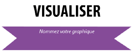

Phase 4/5 : choix des données et des visualisations ≃ 20mn et 30mn
Le principe
Cette phase est guidée par un scénario complet qui répond à l'objectif défini en phase 1, par exemple " je suis enseignant (si c'est votre profil) et pour mon TD de demain (si c'est votre contexte), j'ai besoin de ...".
Cette phase se déroule sur deux temps.
Dans un premier temps vous définissez les données dont vous avez besoin. Vous pouvez avoir des avis différents, ce n'est pas un problème.

Dans un deuxième temps vous choisissez les visualisations que vous préférez. Vous pouvez avoir des avis différents, ce n'est pas un problème.
Fondamental :
Vous devez noter tous les avis et points de vue de chaque personne en les précisant.